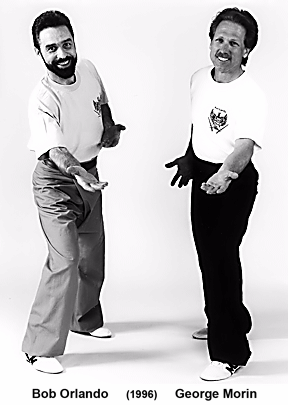

Why Forms? Why Not Jurus?
Traditionally, in Indonesian martial art training, jurus are confined primarily
to upper body movements, teaching, among other things, principles like centerline theory,
angles, leverage, proper hand and elbow placement, etc. However, by themselves,
jurus are incomplete for they only teach part of the art – the upper art.
For combat application you must incorporate langkahs (legwork) –
the lower art. Any good silat system teaches both – they just teach them separately.
In Willem de Thouars' Kuntao-Silat, jurus and langkahs are taught together within forms.
This allows a flow and continuity that is often lacking when individual movements are taught
separately. Both training methods (those teaching upper and lower separately, and those
teaching them together within forms) have their good and bad points. Nevertheless,
both will serve the student well.
To all who see me as a non-traditionalist (something I strongly deny),
let me say that we definitely study forms. Pretty traditional, huh.
You can read an in-depth analysis of the value of forms training (a training method, by the way,
that has taken me years to fully appreciate) online
from Chapter 7 of our book Martial Arts America,
but for now let me share with you just a brief description of the forms we study and their
order of placement in our system.
This description of our forms is intended primarily for the experienced practitioner.
If you are a beginner, you very likely have little or no idea what forms are.
For you, let me say simply that forms are choreographed shadow-boxing and leave it at that.
If you are an experienced player you may have an opinion of forms training that leaves you,
shall we say, less than enthusiastic at the prospect of studying and practicing forms.
For those seeking rank in our system, forms are a required part of our curriculum.
Knowing something about the forms we teach, then, will likely help you in your study.
Advancement from white belt to black takes approximately seven years (depending on the
individual's dedication and talent). One of the requirements for advancement is the
learning of six forms (one per belt). What follows is a list of the forms for each belt
and level. (The M and T in the Basis column stand for Movement-
and Technique-based, respectively.)
|
| Belt | Level | Form Required | Roots / Origins | Basis |
| White | Beginner | None | | |
| Orange | Beginner | Elbow Exercise 1 | Kuntao-Silat (strong Silat focus) | M |
| Purple | Intermediate | Small Hokkien Tiger | Kuntao | M |
| Blue | Intermediate | O Tsung Ee Chuan | Chinese Kung fu & Kenpo 2 | T |
| Green | Intermediate | Leg Maneuvers | Dutch-Indonesian Pukulan Pentjak Silat | M |
| Brown | Advanced | Enam Matjan 1 | Kuntao-Silat | M |
| Black | Advanced | 1. Wah Kua
2. Fung Ling | Kuntao
Nunchaku | M
T |
|
All our forms either strengthen and condition, teach effective self-defense techniques,
and ingrain principles of motion and movement suitable for self-protection.
(Movement involves stances
and how to move from position to position smoothly – left, right, off-center, spinning, and so on.
Motion, on the other hand, is how we strike with our elbows in, say, a half-dozen different ways.)
These are essential requirements, and no form is taught in this school that does not satisfy them.
Forms practice without these essentials is simply folk dancing.
As you can see, we teach a mixture of Chinese and Indonesian forms.
The kenpo 2 form taught can be called technique-based.
By this we mean that such forms teach primarily through specific techniques.
Movement-based forms, on the other hand, are not so clearly defined.
When we teach movement-based forms, we make up techniques to fit the movements
shown so that you can see a movement's potential application.
However, the technique is only one of many possible applications or examples of
what the given movement can be.
Forms contain a wealth of information, and we are wise to study them
seriously. However, contrary to the way most forms are taught, memorizing and preserving
every detail is discouraged. We prefer to return to each form, again and again, with
expectation – drawing from what we already know, but with our eyes wide open, looking
for what we may discover anew – or rediscover something we forgot or simply did
not previously understand. This way forms practice remains fresh and its knowledge
potential inexhaustible. But enough about forms training in general.
Here are some specifics about each form we study and why it is taught at its particular level.
Elbow Exercise
Kuntao-Silat: Required for advancement from white to orange
|
|
This short kuntao-silat form with a very strong pentjak silat focus, developed by George Morin, a fellow student of Willem de Thouars, introduces the student to movement-based training and study. Much like learning the alphabet and grammar, the movements and motion in the form are much more important than the techniques used to exemplify them. Techniques are necessary to teach any form, but only as tools to help the student understand the underlying principles of movement. The form's focus, as you might guess, is elbows, and although it is a short form, in terms of the student's learning, it is much, much more sophisticated than one might expect for a beginner-level form. In fact, we teach this form first because its movements will lay a strong foundation for ALL the forms that follow. George put together a great form.
|

|
Small Hokkien Tiger
Kuntao (Shaolin): Required for advancement from orange to purple This Shaolin-root kuntao form was received from Willem de Thouars, in January 1990. At that time it was taught privately to Mr. Stewart Lauper and Bob Orlando. This form is preferred as the second form shared in our forms training curriculum for two reasons: First because it is relatively short in length. The second reason is because it builds well upon the principles taught in the preceding Elbow Exercise.
O Tsung Ee Chuan
Chinese kenpo / kung fu: Required for advancement from purple to blue With this form, we turn to a technique-based Chinese kenpo / kung fu pattern. Our focus here is on moving quickly from opponent to opponent with practically no pauses in the action and little blocking, per se. What might be interpreted as blocks are actually setups for strikes. "No pauses in the action" means this form is devoid of places where the defender backs up or stops, assumes a ready posture, and waits for the next attack – all action sequences move directly from attacker to attacker. This is a good form that is both technically potent and aesthetically pleasing.
Leg Maneuvers
Pukulan Pentjak Silat: Required for advancement from blue to green This form, also developed by George Morin, is exclusively movement-based and incorporates movements primarily from Dutch-Indonesian pukulan pentjak silat. It is called Leg Maneuvers because although there are numerous hand combinations in it, its focus is primarily legwork (it really is tough to train one without the other anyway).This is a very sophisticated pattern whose introduction is timed to reinforce the lessons learned from the previous movement-based form before moving into the higher level forms that follow. It is ill-suited for competition because very few judges are able to recognize the action that is taking place (unless you've had some of this stuff done to you – or taught to you – you really have no idea what is going on).
Enam Matjan
Kuntao-silat: Required for advancement from green to brown This kuntao-silat form is one of our favorites. It was developed as a collaborative effort taking the first form/jurus received from Willem de Thouars, Juru Satu, and combining that with careful analysis and the knowledge received from other respected Indonesian players. The end result is a form that is both combatively potent and esthetically pleasing.Enam Matjan is well-suited for competition at even the highest levels. However, since few judges recognize the action taking place, it is best performed as a two-man set. With each player facing off and fighting their imaginary opponents as a team, the form is dynamite (and, again, without compromising its effectiveness for entertainment and public consumption). Like Elbow Exercise above, this form is shown in detail (including practice as a two-man set) in our Fighting Forms of Kuntao-Silat video.
Wah Kua Kuen
Honan kuntao: Required for advancement from brown to black
|
|
This form was received from Willem de Thouars in 1989. At that time it was taught in private session to Mr. Stewart Lauper and myself, Bob Orlando. Admittedly, we still strive to fully understand Wah Kua. Although taught with minimal interpretation, as martial art diamond diggers, we at least recognize that what we have is indeed a rare gem, and we will not be satisfied until we discover and polish all of its facets, bringing out its unseen beauty and full combat potential.
|
|
Fung Ling
Chinese kenpo / kung fu: Also required for advancement from brown to black We teach weapons (primarily baton and knife), but this is our only weapon form. This technique-based nunchaku (flail) pattern draws from its Chinese kenpo and kung fu origins. In words of high praise, a respected Okinawa te player said of it, "Hmmm, Chinese feet, Okinawan hands."Using a real weapon (not one made of lightweight rattan or hollow plastic), the student is taught to use the weapon practically and realistically (for example, holding the weapon near the end of the baton rather than nearer the cord). Despite this "no compromise" approach, the form is still an excellent competition form. It demonstrates dexterity with the weapon, versatility in its variety of striking methods, and exceptionally smooth flow from opponent to opponent. This form is one of the ways we get to enjoy the truly art side of what we study, practice, and teach.
Conclusion
During my first three decades of training, I was taught some 27 different forms.
Recognizing that there are only so many ways the body moves effectively (meaning many moves
are seen again and again when looking over a large number of forms), it seemed
reasonable to reduce the number of forms we studied to the handful that we felt would offer
the most bang for the buck. The six described above were selected for our curriculum
because they best meet our demanding requirements – again, they strengthen and
condition, teach effective self-defense techniques, or ingrain principles of motion and
movement suitable for self-protection. Studying them in cyclical fashion (usually
for 3-8 months at a time, depending on the form) provides sufficient distance between each
of them to cause us to return to each with fresh eyes. Seeing them as old friends with
whom we've had little recent contact, we always discover new gems and insights on meeting
them again.
|
Footnotes:
-
Both Enam Matjan and Elbow Exercise are available on video from Paladin Press (see Fighting Forms of Kuntao-Silat)
[Return to reference point]
-
By Chinese Kenpo we do not mean mainline kenpo styles like either Kajukenbo or Ed Parker's American Kenpo. Both mainline styles are excellent, but this form of Chinese kenpo was developed under teachers who taught arts combining primarily Chinese kung fu and Japanese arts – the combination of which they called Chinese Kenpo.
[Return to reference point]
|
|